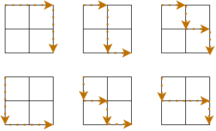

תרגול
ביטויים רגולריים
על גלי האתר
כתבו פונקציה שעוברת על קוד HTML, ומחלצת ממנו את כל הקישורים שמתחילים ב־http:// או ב־https://. שימו לב שזה רק תרגיל, וככלל, זה נחשב רעיון רע מאוד להשתמש ב־Regular Expression כדי לחלץ נתונים מ־HTML.
סימון למטה
כדי ליצור לינק בפורומים, אפשר לפתוח סוגריים מרובעים, לכתוב את המלל שיופיע כקישור, לסגור אותם, לפתוח סוגריים עגולים, להזין את הקישור ולסגור את הסוגריים העגולים. זה יראה כך:
[מערכת התרגילים](solve.pythonic.guru). כתבו פונקציה שמקבלת פוסט בפורום, ומחזירה רשימה של tuples, כך שעבור כל קישור בפוסט –
- במקום הראשון בכל tuple יופיע המלל של הקישור.
- במקום השני יופיע הקישור עצמו.
לדוגמה: [('מערכת התרגילים', 'solve.pythonic.guru'), ('הפורומים', 'forums.pythonic.guru')].
הוא מגיע
פתרו את תרגיל 2 ואת תרגיל 4 ב־Advent of Code 2020. השתמשו ב־Regular Expressions.
ר"ת
כתבו פונקציה שמקבלת רצף מילים, ומחזירה את ראשי התיבות שלהן. לדוגמה: עבור United States of America היא תחזיר USoA. השתמשו ב־sub כדי להגיע לתוצאה הרצויה.
דחוף!!!
כתבו פונקציה כנגד אנשים מציקים ומתלהמים בפורומים. הפונקציה תקבל מחרוזת שבה יש סימני פיסוק כפולים (כמו “עזרה דחוף!!!”) ותוריד את הכפילות (עזרה דחוף!). הפונקציה תעבוד גם על סימני שאלה, נקודה ופסיקים.
דוגמאות:
אני צריך עזרה!,!!! דחוף!!!
יהפוך ל
אני צריך עזרה!,! דחוף!
דוגמאות:
אני צריך עזרה
!!!!!!!דחוף?!?!
יהפוך ל
אני צריך עזרה! דחוף?!?!
לפרק נתיבים
כתבו פונקציה שמקבלת נתיב לקובץ במחשב, ומחזירה במילון שם התיקייה בה הוא נמצא, את שם הקובץ ואת הסיומת שלו.
לדוגמה, עבור הנתיב:
C:\Berries Sherries\Music\Axis of Awesome\4 Chords.tar.gz
יוחזר המילון:
{'folder': 'Axis of Awesome', 'name': '4 Chords.tar', 'extension': 'gz'}
סוגרים חשבון
כתבו פונקציה שמקבלת ביטוי חשבוני ובודקת אם הוא תקין. ביטוי חשבוני נחשב תקין אם הוא מורכב ממספרים שביניהם הסימנים +, -, * או /, והוא מסתיים בסימן =. לדוגמה, הביטויים הבאים נחשבים חוקיים: 17/5=, 5+2=, 5=, 99+1/2=, 6.2*2=, 6+4+3+1/2+6=. הביטויים הבאים נחשבים לא חוקיים: 1.1.1=, 1++7=, =1+1, 1=1, 1+=1.
הערות
כתבו ביטוי רגולרי שמוצא את כל ההערות מרובות השורות (שמתחילות ומסתיימות ב־""" או ''') בקוד פייתון. בונוס: נסו למצוא באותו ביטוי גם הערות רגילות (#).
בדיקות תוכנה
רגע, צדקתי?
כתבו בדיקות לתרגילים “סימון למטה”, “לפרק נתיבים” ו"הערות".
חיים שלי
“משחק החיים” מתרחש בטבלה בגודל אינסופי (לצורך התרגיל, גודלה יהיה 50 על 50).
ערך ברירת המחדל של כל התאים בטבלה הוא “מת”, כלומר 0.
לפני המהלך הראשון של המשחק, “מחיים” מספר תאים בטבלה, כלומר, משנים את ערכם מ־0 ל־1.
המשחק מתרחש ב"דורות", כאשר בכל דור (T) מצב הלוח מתעדכן לפי מצב הלוח בדור הקודם (T - 1).
מצבו של תא בדור T יקבע לפי כמות השכנים שלו, קרי, כמות התאים שמקיפים אותו (בצדדים ובאלכסוניו – 8 במספר).
בדור T, תא חי ימות (ערכו ישתנה ל־0) אם אחד התנאים הבאים התקיים:
- כמות השכנים החיים שלו בדור T-1 היא פחות מ־2 – התא ימות מבדידות.
- כמות השכנים החיים שלו בדור T-1 היא יותר מ־3 – התא ימות מצפיפות יתר.
בדור T, תא מסוים יחיה (ערכו יישאר או ישתנה ל־1) אם אחד התנאים הבאים התקיים:
- הוא היה חי, וכמות השכנים החיים שלו בדור T-1 היא בין 2 ל־3 – התא ממשיך לדור הבא.
- הוא היה מת, אבל כמות השכנים החיים שלו בדור T-1 היא 3 בדיוק – ככה תאים באים לעולם. דילגו על הרעיון של חסידות וכו’.
החוקים שתוארו עד כה למשחק החיים קיבלו את הסימון B3/S23:
- תא נולד (
B) אם יש לו 3 שכנים חיים. - תא שורד (
S) אם יש לו 2 או 3 שכנים חיים. - בכל מצב אחר הוא מת.
צרו פונקציה שנקראת game_of_life ומקבלת כפרמטר את סימון החוקים.
אם לא הועבר לפונקציה סימון חוקים, השתמשו בחוקים B3/S23 המופיעים מעלה.
הפונקציה תציג סימולציה ויזואלית של “משחק החיים” – בין אם בעזרת print או בעזרת כלים כמו pygame.
הפרידו לפונקציות ככל האפשר וכתבו קוד מסודר ונעים לתחזוקה.
כיתבו בדיקות לכל הפונקציות שלכם, ונסו להגיע ל־100% כיסוי.
(העתקות מהאינטרנט של התרגיל הזה לא יתקבלו בעין יפה  )
)
פרויקט בלי בדיקות? 
הוסיפו בדיקות לפרויקט שבניתם בשבוע שעבר.
קראו על הוספת בדיקות ל־Flask בעמוד התיעוד המתאים.
ודאו שיש לכם 80% כיסוי לפחות.
סיבוכיות
יעילות בסיסית
כתבו מה היעילות של כל אחד מהפעולות הבאות.
השתמשו בגוגל כדי לחפש את סיבוכיות הזמן (time complexity) של כל אחד מהבאים.
אם אפשר, התייחסו למקרה הממוצע (Average case) ולא למקרה הגרוע ביותר (Worst case):
- רשימה בפייתון: הוספת איבר אחרון, הוספת איבר שאינו אחרון, מחיקת איבר אחרון, מחיקת איבר שאינו אחרון, פנייה לאיבר ברשימה, חיפוש איבר ברשימה (
in), מציאת אורך הרשימה. - מילון בפייתון: הוספת איבר חדש, אחזור איבר לפי key, אחזור איבר לפי value, מחיקת איבר, חיפוש איבר במילון (
in). - קבוצה (set) בפייתון: הוספת איבר חדש, מחיקת איבר, חיפוש איבר (
in). - סידור של n מספרים ברשימה בלתי ממויינת. רמז: אין הנחות נוספות לגבי הרשימה, ועליכם להתייחס לאלגוריתמים מבוססי השוואה.
- מציאת איבר ברשימה מסודרת, ומציאת איבר ברשימה לא מסודרת.
יעילות בחיים
מה היעילות של “משחק החיים” שכתבתם בתרגיל על בדיקות תוכנה?
מה היעילות של כל אחת מהפונקציות שבו?
צרפו קישור לתרגיל “משחק החיים” שהעלתם.
הפרש סכום הריבועים
סכום הריבועים של המספרים הטבעיים עד 5 הוא 1^2 + 2^2 + 3^2 + 4^2 + 5^2 = 55.
ריבוע הסכום של המספרים הטבעיים עד 5 הוא (1 + 2 + 3 + 4 + 5)^2 = 15 ^ 2 = 225.
כלומר, הפרש סכום הריבועים במקרה שבו N=5 הוא 170, שכן 225-55=170.
כתבו תוכנה שמקבלת N ומחזירה את הפרש סכום הריבועים. מה יעילותה?
בונוס למתמטיקאים: האם תוכלו לפתור ביעילות זמן ריצה O(1)?
על הדרך מושיק
נצייר טבלה בגודל 2 על 2, ונמקם את מושיק בשולחן השופטים שבנקודה השמאלית העליונה של הטבלה (לא בתא).
מושיק יודע לנוע רק ימינה ולמטה, כך שיש לו 6 דרכים בלבד להגיע לנקודה הימנית התחתונה בטבלה, הרי היא המנה הנכספת:

קבלו כקלט את גודל הטבלה, N.
בכמה דרכים יכול מושיק להגיע למנה?
מה היעילות של התוכנית שכתבתם?
קריוס ובקטוס
אזדרכת וחשבשבת צריכות להתחלק בסופגניות הזעירות שקיבלו בחנוכה.
לצורך כך, הן בנו משחק שמשתמש בטבלה ריבועית M בגודל X על X שמולאה במספרים באופן אקראי.
בתחילת המשחק, אזדרכת בוחרת שורה כרצונה (i) ומעבירה עליה קו כחול.
חשבשבת בוחרת בעמודה כרצונה (j) ומעבירה על כל המספרים בה קו אדום.
אזדרכת עכשיו לוקחת סופגניות זעירות כמספר שמופיע בטבלה במקום M_{ij}.
עכשיו אזדרכת שוב בוחרת שורה כרצונה (k; שחייבת להיות שורה שבה לא בחרה בעבר), וחשבשבת שוב בוחרת עמודה בטבלה (l; שחייבת להיות עמודה שלא בחרה בעבר).
אזדרכת לוקחת הפעם M_{kl} סופגניות.
בכל שלב במשחק, אם מספר הסופגניות בתא הנבחר הוא שלילי, אזדרכת מאבדת את מספר הסופגניות הזה, והסופגניות עוברות לחשבשבת.
המשחק ממשיך עד שמועבר קו על כל המספרים שבטבלה.
מה מספר הסופגניות הגדול ביותר שאזדרכת יכולה להרוויח אם גם אזדרכת וגם חשבשבת משחקים בצורה הטובה ביותר?
לצורך התרגיל, השתמשו בטבלה בגודל 4 על 4.
מה היעילות של התוכנית שכתבתם כדי לגלות זאת?
דונלד
דונלד הקים חנות למכירת ברווזי גומי.
באחד הטרמפים שלקח עם חברו, קנות’, הידוע כדאקדקן במיוחד בענייני חשבונאות,
סיפר לו דונלד כיצד הוא מנהל את החשבונות בחנות שלו.
עבור כל קנייה, דונלד רושם בקובץ את סכום הקנייה כשלפניה מופיע הסימן +.
כל פעם שדולנד קונה סחורה חדשה עבור החנות, דונלד רושם בקובץ את הסימן מינוס, ואז את הסכום שהוציא.
לדוגמה, החודש היו לו 3 לקוחות שקנו ממנו ברווזי גומי ב־50, 60 ו־70 שקלים, והוא ביצע 2 רכישות בשווי 120 ו־2 שקלים.
קובץ החשבונות שלו החודש נראה כך:
+50
+60
-120
+70
-2
כתבו שתי פונקציות שיעזרו לדולנד:
- הפונקציה
parse_fileשתקבל נתיב לקובץ, ותחזיר מבנה נתונים שיהיה נוח לעבוד איתו. - דונלד רוצה להתרברב בכמה שהוא עשיר. עזרו לו לכתוב את הפונקציה
very_rich, שמחזירה את הסכום הגבוה ביותר שהרוויח בימים רצופים החודש. בדוגמה שניתנה למעלה, הסכום הוא 110: בימים הראשון והשני דונלד הרוויח 110 ש"ח. לאחר מכן הפסיד 120 ש"ח (סך הכל חובות של 10 ש"ח) ואז הרוויח 70 ש"ח (מרווח 60 ש"ח). בדוגמה הבאה, דונלד יתרברב על רווח של 45 ש"ח בין הימים השלישי לשישי. ממשו את הפונקציה הזו ביעילות זמן ריצה של לפחות O(n^2). האם יש לכם רעיון אפילו טוב יותר?
+5
-10
+30
+10
-5
+10
-40
+30
הורדות
ביום הראשון של הקורס, כשב־LIVE ביקשתי מהחניכים להוריד את Anaconda Python, השרתים שלהם קרסו.
בתחקור שלאחר המעשה, בעלי השרת ניסו להבין איפה היה העומס הרב ביותר על השרת.
לצורך כך, הם קיבלו את התיעוד של מה קרה בשרת.
כל שורה בקובץ מורכבת מ־3 חלקים:
- ה־IP שממנו נשלחה בקשת ההורדה, ואחריו נקודתיים.
- הזמן (בשניות מאז עליית השרת) שבו כל IP התחיל להוריד את הקובץ, ואחריו מקף.
- הזמן (בשניות מאז עליית השרת) שבו כל IP סיים להוריד את הקובץ.
לדוגמה:
193.238.175.157: 503-584
81.173.1.186: 324-793
208.195.27.101: 224-710
198.241.74.162: 747-770
201.96.152.206: 601-861
159.10.243.192: 823-879
137.221.214.153: 416-975
24.139.10.160: 190-323
136.244.3.48: 640-975
117.126.245.109: 67-302
עזרו למחלקת ה־IT לתחקר את המקרה: באיזה טווח שניות היו הכי הרבה חיבורים פתוחים מול השרת.
אם מספר החיבורים המירבי התרחש ביותר מנקודת זמן אחת, החזירו את נקודת הזמן הראשונה שבה זה קרה.
בדוגמה שהוצגה למעלה, נניח, מספר החיבורים המירבי היה 5, בין השניות 640 ל־711.
פתרו בסיבוכיות זמן ריצה O(n\log{n}).
הניחו שהמספרים יכולים להיות גדולים מאוד – השרת רץ מאז 1980 לפחות, ויש אגדות על כמה הורדות שעדיין לא הסתיימו מאז…